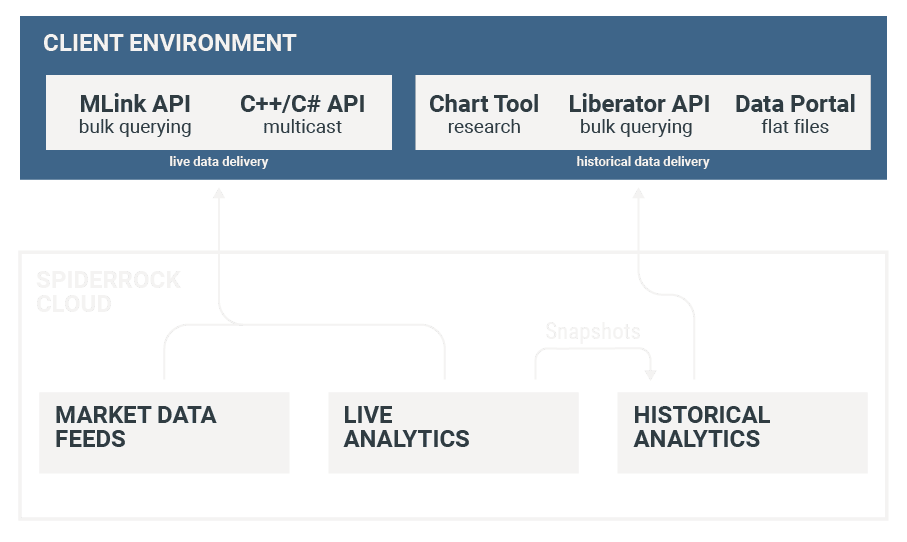

Data & Analytics
Institutional quality market data and analytics with resource-efficient delivery — from raw exchange feeds to fully computed analytics.
Consult With Us
Overview
Our analytics framework provides a low latency and scalable solution for clients to consume live and historical data.
Vendor of record for low latency raw and normalized feeds covering US-listed equities, options, and futures. Quotes and prints in real time.
Greeks, implied volatilities, volatility surfaces, historical volatilities, risk factors, trade performance, and opening/closing marks — computed on every tick.
Snapshots of live data/analytics at end-of-day, intraday, and minute-bar frequencies. Up to 10 years of history for backtesting and research.
Real-Time
SpiderRock provides raw and normalized low latency multicast feeds covering US equities, options, and futures markets. As an exchange licensed redistributor, we deliver market data in both original and normalized formats.
Live Analytics
SpiderRock's proprietary live analytics offer low-cost delivery of market data and options analytics without making a significant investment in infrastructure. Analytics for volatility and surface modeling accuracy capable of supporting live trading operations.
Historical
SpiderRock provides a wide variety of historical data in multiple file formats with frequency from end-of-day to one-minute intervals throughout the trading day.
Daily subscription files organized by format type and date, loaded into cloud-based storage overnight. Access manually via browser or programmatically using a public-facing IP and security token.
On-demand access via REST API. Query by ticker or groups and by date and time ranges. Starter code in Python, R, C++, C#, JavaScript, and Microsoft Excel plug-in.
Browser-based access to historical data files. Search, filter, and download data from SpiderRock online. Log in to view subscribed files.
Our broad and rich analytics are easily accessible via multiple delivery mechanisms. This empowers you to scale while keeping cost under control.
Get in Touch